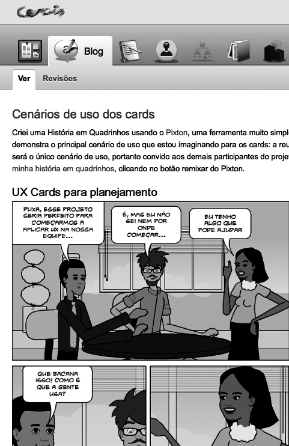
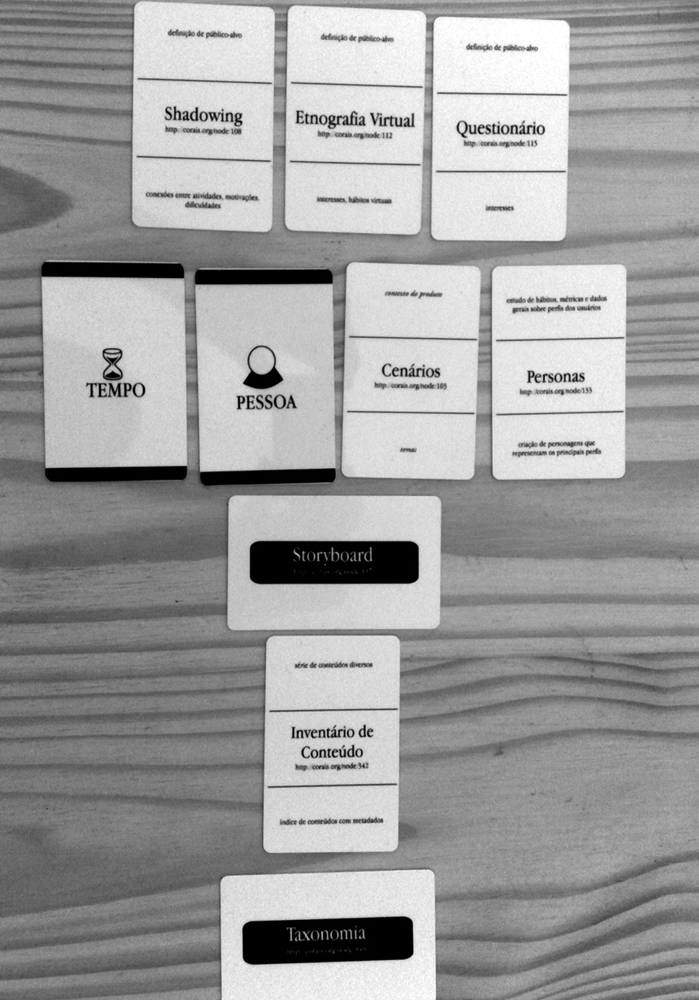

Capítulo 11 Plataforma Corais
Corais es una plataforma para el desarrollo de proyectos de diseño libre. Así como un arrecife de coral ofrece una infraestructura propicia para diferentes formas de vida marítima, esta plataforma tiene el objetivo de proliferar proyectos colaborativos que contribuyan a un bien común. El instituto Faber-Ludens creó esa plataforma para apoyar el desarrollo de proyectos abiertos en otras organizaciones, sin necesidad de haber vínculos formales con el Instituto, siguiendo una estrategia de innovación abierta. Esa plataforma es incluyente también para individuos que deseen proponer nuevos proyectos o participar en los ya existentes. En Corais todo lo que es publicado en el sistema está disponible para los participantes del proyecto y también para cualquier persona que esté conectada a Corais, creando así una base de conocimiento para futuras consultas, es decir, la tan esperada documentación exigida por los gerentes de proyectos es generada espontáneamente con el desarrollo del proyecto. Además de eso, personas fuera del proyecto pueden contribuir con comentarios o juntarse al proyecto y contribuir más activamente. A cada actualización en el proyecto, los miembros del grupo reciben una notificación por correo electrónico, manteniendo una dinámica colaborativa en la que todos están al tanto de lo que está sucediendo.  ## Herramientas colaborativas Corais cuenta con diversas herramientas que permiten la colaboración y el desarrollo de proyectos remotamente. Las herramientas disponibles para la creación de proyectos actualmente son: blog (con sistema de comentarios), avisos para los participantes, lista de tareas (to-do list), galerías de imágenes, lista de miembros, sistema de votaciones (encuesta), texto colaborativo (wiki), sugerencias y cuestionarios. Además de eso, existe el panel, que es la página inicial patrón de los proyectos que muestra una descripción del proyecto, y una lista de las últimas actualizaciones del proyecto en cuestión. Con estas herramientas en mano, los participantes pueden hacer sus reuniones, debatir preguntas, y construir el proyecto con información obtenida de forma colaborativa y libre. Cuanto mayor sea el diálogo, más transparente se vuelve la caja negra, permitiendo la apropiación del conocimiento y la futura validación del proyecto, ya que todas las etapas de investigación y concepción estarán documentadas. Corais archiva las comunicaciones dentro del proyecto y las vuelve disponibles para todos, generando documentación para los proyectos. Esta validación es importante para mostrar el camino recorrido previamente para llegar a aquel resultado considerado como final, cuántas ideas fueron dejadas de lado, y cuántas se unieron para convertirse en una sola. Aplicación Árvore do Conhecimento (Árbol del Conocimiento) Corais permite el aprendizaje continuo, aunque el mismo proyecto que estaba siendo desarrollado no haya sido terminado. A través de la aplicación Árvore do Conhecimento, que representa una descripción de metodologías de diseño colaborativa en una wiki, todos pueden dar su contribución expandiendo el conocimiento para la comunidad. Al utilizar uno de los métodos de la aplicación Árvore en un proyecto, se crea un link que agrega el método como referencia en el proyecto. Así, se crea una base de ejemplos de forma orgánica para cada uno de los métodos disponibles. Debido a que el proceso de realización de proyectos en Corais es público, el participante acaba creando una especie de portafolio online. Es uma forma de exponer sus trabajos de forma rápida. La gran diferencia de este portafolio generado por Corais para los portafolios en común, es que no se muestra solo el resultado final, pero sí todo el proceso creativo que llevó a aquel resultado, y por ende, da mayor respaldo a la investigación y concepciones realizadas durante el transcurso del proyecto, ya que todo se documenta automáticamente. Además, como forma de estímulo a la producción, el participante incluso gana puntos en la comunidad. ## UXCards  Es una baraja de métodos en desarrollo de la plataforma libre Corais. A través de la tormenta de ideas colaborativas, las UXCards pueden ser utilizadas de diferentes formas con el fin de resolver problemas de Diseño, planeación de proyectos de Experiencia de Usuario (User Experience, o UX) y la revisión del flujo de trabajo. Los UXCards son uma óptima herramienta para discusión y planeamiento del proceso en modo colaborativo: todos pueden sugerir modificaciones y discutir puntos importantes del proceso de UX. Las UX Cards son clasificadas en tres tipos: Método, Deliverable (entregable) y Recurso. Las cartas del tipo Método poseen inputs (entradas) y outputs (salidas). Los inputs son lo que es necesario tener para utilizar el método elegido, y los outputs son los resultados de la utilización del método. Estos resultados pueden ser entregables, o datos que servirán de inputs para otros métodos. Los métodos sirven para la planificación, proporcionando una mayor seguridad en las decisiones, pues el uso de estos genera argumentos medibles (cuantitativos y cualitativos). Las cartas deliverable son los entregables, resultados de una parte del proyecto, tangibles o intangibles, que pueden ser utilizados como entrega para clientes internos o externos. La relevancia de los entregables está en prever cuál documentación deberá ser generada durante el proceso, facilitando que el proyecto se mantenga dentro del plazo predeterminado. Por último, las cartas del tipo Recurso son modificadores que están agregados al proceso en ejecución como, por ejemplo, tiempo y personas. La relación entre las cartas genera una previsualización de las etapas del desarrollo, en la cual es posible, por ejemplo, prever en cuáles etapas del proyecto se contará con menos personal, y por consiguiente, tardará más tiempo para ser ejecutadas. Cualquier persona puede participar del proyecto UXCards, solamente tienen que registrarse en el sitio web y entrar en el proyecto. Es posible votar en las decisiones de layout, sugerir nuevos formatos, bajar los archivos fuentes, imprimir, hacer exámenes y reportar para la comunidad. Cuando el proyecto esté listo para la producción, los archivos fuente continuarán disponibles para quien quiera imprimir en la gráfica más próxima. > Tal como la vida se halla organizada en nuestros tiempos, un pueblo analfabeto será, sin remedio, el esclavo de un grupo de perversos de su propio suelo, o la presa fácil de cualquiera nación poderosa que desee absorberlo o dominarlo. [Alberto Masferrer] ## Digiriendo la Tecnología Aunque la mayoría de las personas prefieren hablar de tecnología en tono pesimista, existen aquellas que ayudan a dar cuerpo al discurso que afirma que el Diseño humaniza a las tecnologías. Este argumento, claro, es un pleonasmo. No hay nada más humano que la tecnología, principalmente en sus aplicaciones más abstractas, dictatoriales, mortíferas y enfermizas. Aunque algunas personas digan que eso es “inhumano”, es un hecho que no hay otra especie de vida en este planeta capaz de hacer tal cosa sino el mismo ser humano. La tecnología, sin embargo, es apenas una de las posibilidades del ser humano. Mientras sea celebrada como principal vector de los cambios sociales, estaremos perdiendo la oportunidad de desarrollar otras habilidades humanas tales como el amor, el arte y la espiritualidad. Cada vez que alguien repite: “el advenimiento tecnológico transformó nuestras vidas así y asá”, no vemos otra posibilidad de nuevos cambios a no ser por la misma tecnología. No existe una vía trascendente, no hay otro camino. Y el capital hace la fiesta, levantando recursos naturales que parecen infinitos para la producción de cachivaches que sirven para solucionar problemas causados por otros cachivaches. Sin embargo, es claro que eso no va a sustentarse por mucho tiempo. Nos han robado la esperanza de un mundo mejor, la empacaron y la hicieron parte de un proceso de compra. Por medio del Diseño Libre, queremos traer de regreso esta esperanza por una sociedad mejor, pero realizada por sujetos autónomos. La tecnología, como parte del sujeto, no como entidad externa, bajo su control por el conocimiento y por el sentimiento. Por eso, el Diseño Libre también asume la posición de recordar que todo diseño es político. Tiene efecto en la vida social, modifica la percepción de realidad. Hacer Diseño es hacer elecciones que interfieren en la vida de las personas, de manera impactante. Es más, las ciudadanas deben tener derecho a influenciar y decidir sobre lo que interfiere en sus vidas. Un buen ejemplo son algunos procesos relacionados a la gestión democrática de los presupuestos participativos, modelo adoptado por algunas ciudades para mejorar la transparencia en sus cuentas, y para traer a la población (usuaria de los servicios públicos) la posibilidad de decidir el destino de los recursos, reconociendo, a través de su percepción, cuáles son las prioridades y asumiendo corresponsabilidades. Está claro que existe una “demanda reprimida” de personas que sienten que crear su “bannercito”, “loguito”, “sitiecito” no es suficiente. Que creen que diseño es un poder de transformación, que su conocimiento y sus habilidades pueden —y son— útiles para la sociedad, pero que podrían serlo mucho más. Vivimos presos al paradigma de que la innovación es realizada por genios aisladas como Einstein, Newton o Jobs. Todavía estamos aprendiendo a reconocer con naturalidad la innovación realizada por la multitud. En el diseño libre, el conocimiento viene de diversas fuentes: especialistas, novatas, curiosas, entusiastas. De las mismas personas que dan uso al resultado del proceso de diseño hasta personas distantes, que viven bajo otras condiciones y culturas. Su enfoque no está apenas en un “producto final”, y el conocimiento generado también es parte del producto, permitiendo que el diseño sirva a más personas durante más tiempo. El diseño libre abre posibilidades en la producción y en el comsumo de diseño, creando una base de conocimientos, una base común de trabajo y reflexión. Una avalancha de conocimiento sobre las decisiones de diseño se pierden en el transcurso de los proyectos. ¿Cuánto la comunidad de diseño se beneficiaría si un “Designleaks” difundiera informacion de casos que conocemos y que son parte de nuestro día a día, conocimientos que pudiesen ser utilizados por otros diseñadores? Tendríamos una cultura de diseño basada en la mediación. Es innegable el papel fundamental del diseño en la mediación de valores de la cultura a través de objetos e interfaces. La mediación no es aquello que sale de la mano de una diseñadora, sino la técnica perfeccionada que permite apropiación del diseño para diversos fines. La libertad que el diseño libre defiende no es la libertad de la diseñadora, sino la libertad de la usuaria de proyectar mientras se usa, de ser también una diseñadora: permite que cada una se vea como autora del uso que hace de los objetos e interfaces a su alrededor. En último análisis, el diseño libre valida la participación de todas en la cultura material; se realiza, como mínimo, una aproximación entre el uso efectivo y proyecto idealizado, dos momentos que acostumbran ser totalmente separados en el discurso tradicional, pero que únicamente son dos caras de la misma moneda. Para comer a mis semejantes, heme sentado a la mesa. [Augusto dos Anjos] ## Proyecto cultural En el diseño libre, la propuesta es que los proyecto sean re proyectados espontáneamente, en un proceso de mezcla cultural continua. Aparte del incentivo a la colaboración dentro de los proyectos, esta idea se torna fuerte con la colaboración entre los proyectos. Es un canibalismo cultural: utilizar proyectos anteriores para desarrollar el suyo. Con el uso de licencias Creative Commons, ese “canibalismo cultural” se vuelve políticamente correcto. La ventaja es que una idea que estaría destinada a ser olvidada puede ganar una “oportunidad de vida” con la apropiación de un nuevo proyecto, reconceptualizándole frente a nuevos contextos. Es justamente en este sentido que el Diseño Libre se identifica con un posicionamiento que tiene un punto de partida que comienza en la antropofagia, como un contacto bruto y sabroso de la mordida de lo desconocido. Sigue, después, con el Tropicalismo, con acordes tocados sirviéndose de los instrumentos que llegan hasta nosotras. Reafirma los pies con la moción de la Cultura Digital, “metareciclando” y “digitofagizando” ideas con todo el mundo. Abrazada, en medio de una legión mutante con el open design, aun así el diseño libre trae un sabor diferente para quien le saborea. La cuestión ética es central en el Diseño Libre, lo que aleja sus discusiones del open design. Diseño Libre habla sobre permitir que todas proyecten. Diseño, en la concepción amplia del término, dice que todos nosotros ya proyectamos —pero, ¿cuán conscientes estamos de este tipo de libertad que tenemos? No se trata solamente de disponer archivos fuente de proyectos gráficos, o diseños 3D. Se trata de difundir el conocimiento en diseño, siendo el primer paso a la apertura del proceso de diseño, permitiendo que otras personas intervengan en el proyecto y, quién sabe, aprendan algo útil que llevarán consigo en sus propios proyectos. Distanciándose de un enfoque de “compartir archivos abiertos”, o de dominar la utilización de un software u otro, el diseño libre busca sobrepasar el dominio técnico de la herramienta, y contextualizar el conocimiento. Saber cuándo utilizar una herramienta es tan importante como saber utilizarla. > O diseño é um cantor de Pout-Pourri. > Daí nos decidimos comê-lo. > O diseño é um cadáver hiperativo que eu digeri. > % > El diseño es un cantante de Pout-Pourri. > Por ello es que decidimos comerlo. > El diseño es un cadáver hiperactivo que yo digerí. > % > A livre expressão é o que constrói uma nação > independentemente da moeda e sua cotação > Deixa eu falar, filha-da—-!!! > Expressão!! % La libre expresión es lo que construye una nación indepnedientemente de la moneda y su cotización. > ¡Déjame hablar, hija de —–! ¡Expresión! > [Raimundos -Deixa eu falar]